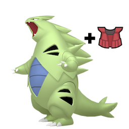
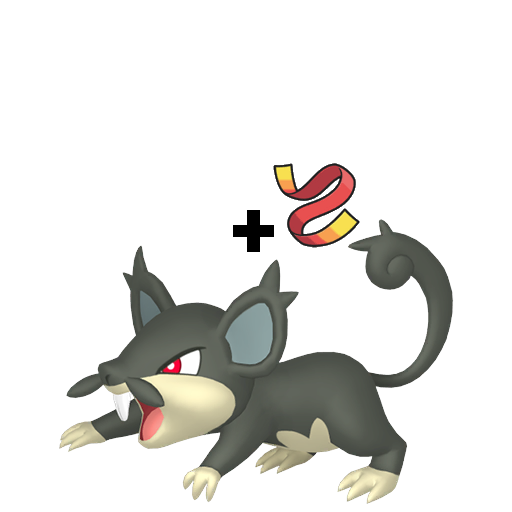

Designing your Team
When it comes to selecting a team, there are quite a few important factors to consider. However, there are several good guidelines that can help you form a team and avoid common pitfalls.
First and foremost, online formats are divided by what is called 'Usage Tier'. In usage tiers, each pokemon is assigned a usage tier, and cannot be used in any of the usage tiers below that. The most commonly played tiers, and the pokemon that you can expect to face in them, are as follows: OU (Over Used), which usually contains extremely strong pokemon such as Tyranitar, Dragonite, Rotom-W, or Garchomp, very flexible support pokemon such as Pelipper, Toxapex, and Skarmory, and even some of the less-powerful legendaries, such as Zapdos, Landorus, Tapu Lele, and Victini. UU (Under Used), which contains relatively powerful pokemon such as Infernape, Chesnaught, Feraligatr, Swampert, and Gengar. It also contains somewhat oppressive support pokemon such as Alolan Muk, Amoongus, and Starmie. RU (Rarely Used), which usually contains pokemon that are powerful in the right situations, such as Arcanine, Ninetales, Donphan, or Flygon, as well as niche support pokemon, such as Slowbro, Umbreon, and Forretress. While not technically a tier, there is also Ubers, which contains any pokemon that's been banned from play in OU. This tends to exclusively include powerful legendary pokemon, such as Groudon, Kyogre, Dialga, or Arceus. The few non-legendary pokemon in this list tend to be extremely oppressive, such as Aegislash, Mega Gengar, and Blaziken.
Because usage tier determines how powerful the teams you face will be, it is often very helpful to choose a usage tier for your team before constructing said team. Once that's done, you should decide what kinds of pokemon you want to put on your team. Fast, powerful pokemon, such as Garchomp, tend to be really good at dealing damage to teams, but if they get stopped by a defensive pokemon, they tend to go down quickly. Defensive pokemon, such as Ferrothorn, can stop enemy damage dealers from sweeping through your entire team, but usually have more trouble dealing damage. Balanced pokemon between either of these two extremes can be quite useful at either killing your opponent's damage dealer or stopping them from going further. Finally, support pokemon increase the effectiveness of other pokemon on the team. This is the vaguest group on this list in terms of what the pokemon will actually be doing, but many support pokemon have useful traits such as the ability to almost always move before their opponent, access to a wide variety of useful moves: status moves like thunder wave or hazard-setting moves such as toxic spikes, as well as moves that benefit the whole team, such as light screen, heal bell, or wish, and, finally, most support pokemon tend to be able to survive on the field, either through moving first and disabling the opponent, or not taking much damage from common attacking types. Generally, a good team should have pokemon that fill each of these roles, so that you can flexibly adapt to any situation you encounter.
There are, however, certain things to watch out for when building a team. For starters, you want to ensure that your team can handle the most oppressive strategies you encounter. One example of an oppressive strategy is known as FEAR rattata; a rattatta that uses endeavor on the first turn to set your HP to one, then using quick attack on the next turn to take out your pokemon. This strategy can be countered by anyone with a quick attack or extreme speed user of their own, but other teams struggle to deal with it. While there is no true way to protect yourself against all unusual strategies, it is good practice to think of any strategies that could entirely destroy your team without you being able to do anything about it. Identifying, then fixing, these issues is the key to improving your team.
On another note, it is usually good practice to make sure that most of your team is not weak to the same type of attack. This is a very common mistake made by beginners, who often like to field teams composed of powerful dragon types, as well as a few other pokemon. While this can be effective, this often leaves their team weak to Fairy and especially Ice type moves, which, even if used by a pokemon not normally known for being a powerful attacker, could spell game over for your dragon team simply by hitting your entire team super effectively. There's a reason gym leaders in the games are easy to defeat; they only use one type. By avoiding this pitfall, and using varied types, you can ensure that your team does not suffer a crushing defeat just because your opponent decided to use a move of a certain type.